CMSE 202 - Spring 2021
Software Setup Guide
As this is a course in computational modeling and data science, you will be completing all of your assignments using your computer! However, in order to do so there are a number of things you need to set up before the course starts. If you run into issues during this setup process make sure to document the error you encountered and send an email to your Professor to let them know that you ran into a problem.
MAKE SURE TO COMPLETE ALL OF THE SECTIONS LISTED IN THIS DOCUMENT BEFORE YOU COME TO CLASS. Start with the section on “Setting up important accounts” and then move on to “Setting up important software” (if you want to be able to run your code locally on your computer without having to rely on internet-based resources).
Table of Contents
Setting up important accounts
MSU’s JupyterHub Interface
Since it can be challenging for instructors to troubleshoot a wide range of computer issues remotely owing to variations in computer operating systems, user access, and hardware, you are expected to ensure that you can access the JupyterHub interface provided by the College of Engineering. Ultimately, it is up to you if you choose to use the JupyterHub server or your local Python installation for the assignments in this course, but if you run into issues with your local installation, the instructors will recommend that you switch to JupyterHub until you can troubleshoot your issues. In addition, some assigments may require that you use the JupyterHub server.
The JupyterHub server hosted by the College of Engineering creates a virtual environment that allows you to run simple commands and host Jupyter notebooks. To make sure that you have access to this server, follow the directions below. If you have not previously used JupyterHub, note that there are extra steps involved that require that you upload and download you Jupyter notebooks to and from the JupyterHub server in order to turn them in on D2L – this may be different than your experience with using your local Python installation.
Instructions for connecting to the engineering JupyterHub server:
Every student enrolled in this class will be given an engineering computing account. If this is your first time using your Engineering account you will need to activate the account by going to the following website:
https://www.egr.msu.edu/decs/myaccount/?page=activate
Enter your MSU NetID. The initial password will be your APID with an @ on the end (example: A12345678@) and then you have to set a password that meets the requirements listed on the page. Verify the password. Then agree to the terms and Activate.
Once your account is activated you can access the classroom JupyterHub server using the following instructions:
- Open up a web browser and go to the following URL: https://jupyterhub.egr.msu.edu (if that one doesn’t work for any reason, try https://jupyterhub2.egr.msu.edu. Feel free to use whichever one you want or whichever one happens to be functioning when you try.)
- Type your engineering login name. This will be your MSU NetID.
- Type your engineering (DECS account) password.
If everything is working properly you will see the main “Files” windows in the Jupyter interface.
If you ever run into an issue with accessing JupyterHub, contact jupyterhub@egr.msu.edu for support.
The following directions should serve as a reference for how you can go about uploading and downloading Jupyter notebooks and turning them in.
Instructions for getting Jupyter notebook files onto JupyterHub:
Jupyter notebooks (also referred to as IPython notebooks) are files that end with the .ipynb extension. We will give you these files for all of your assignments, you will edit them and turn in the edited files in using the class Website.
You can download the .ipynb assignment files from the class website (http://d2l.msu.edu). Once you have an .ipynb file you can load it into Jupyter using the “upload” button on the main “Files” tab in the JupyterHub web interface. Hitting this button will cause a file browser window to open. Just navigate to your ipynb file (wherever you downloaded it to), select it, and hit the open button.
Once you see your filename in the jupyter window you can just click on that name to start using that file.
Instructions for downloading Jupyter notebooks from JupyterHub and turning them in:
When you are finished editing your Jupyter notebook and are ready to turn it in you will need to download the .ipynb file from the JupyterHub interface.
With the notebook file open in JupyterHub, go to the “File” menu, select the “Download as” menu option and then choose “Notebook (.ipynb)”
Pick a place to save the file (e.g. the desktop, your downloads folder, or a special folder for CMSE 202 content).
Make sure you keep a copy of the .ipynb file for your own records.
Go to the Desire 2 Learn (http://d2l.msu.edu) class website and upload the .ipynb file into the appropriate assignment folder.
NOTE: Video versions of these instructions are available on the CMSE YouTube channel here and here.
Course Communication with Slack
We will be using Slack (http://slack.com) as our means of communicating about course content as the semester progresses and to provide a space for you to ask questions and get help. We believe that this will provide an excellent avenue to have discussions not only with course instructors, TAs, and LAs, but also between you and your fellow classmates. In order to join the Slack team that we’ve created for the course you should complete the following steps:
- Go to https://cmse-courses.slack.com/signup
- Once there, sign up using your @msu.edu email address.
Important: When you create your account, use your MSU NetID as your user name. This will make it easier for your instructors to recognize you within the Slack channels.
Once you’ve joined the CMSE Courses Slack team, you’ll need to add yourself to two channels. The first channel you should add yourself to is “cmse202-s21-help”. The second one you should add yourself to is “cmse202-###-s21” where “###” corresponds to the section of the course that you are enrolled in. To add yourself to these channels, click on “Channels” and search for the appropriate channel.
The “help” channel will be the place to go for any questions about assignments in the course or issues you’re having with your computer or Python. We encourage you to help out other classmates when you can! The section-specific channel will be used by your instructor for important messages relevant only to your section of the course.
Slack usage guidelines
In order to ensure that Slack is a useful tool that does not become overly time-consuming for the course instructors, TAs, or LAs, we have a list of rules for how we expect you to use Slack. They are:
- Do not post your solutions to out-of-class assignments directly into Slack unless prompted by an instructor.
- Before you ask a question, be sure to check the other section channels to see if the question has already been answered.
- The Slack team is primarily for you, the students, so help each other.
- The TAs and LAs will monitor the channels, but will defer to the students to work through things. They will only enter a conversation if students are going down the wrong path and/or there are too few other students involved. However, you should not expect that the TAs or LAs will always be available. The TAs and LAs will spend a limited amount of time “logged in” to Slack and we ask that you be respectful of their time.
- Slack is meant to be used to help you when you are stuck with a minor issue. If you are having major issues or trouble understanding the concept, go to office/helproom hours. Office/helproom hours are meant for more in-depth discussions of course content.
- Course instructors will monitor Slack when time permits, but might only pop on to examine progress. While they may offer help, it is not recommended that you rely on getting that help on short timescales. Instructors will not respond to the same student twice within a 30 minute time interval.
- Only in rare cases should you contact an instructor through a private channel. But, if you are struggling, feel free to use this option.
- Be courteous to everyone on Slack. Students who are being rude or who are excessively posting might be banned from posting on the course Slack channel.
Setting up a student GitHub account
From time to time in the course, you may be expected create, use, and share GitHub repositories with your instructors and your fellow classmates. If you don’t know what a GitHub repository is, don’t worry! You’ll learn about Git repositories and how to host them on GitHub in class.
In order to do this, you need to set up an account on GitHub. Go to https://github.com/ and sign up for an account using your “@msu.edu” email address. It is important that you sign up using your “@msu.edu” account so that you can get the Student Pack, which gives you special access to software and unlimited private repositories. The student pack can be found here. You are expected to request access to the Student Pack before you come to class. Once you have a GitHub account, the instructors will be able to give you access to any important course GitHub repositories.
Setting up important software
(if you want to run your code locally)
Installing Python for this course
If you choose to use a local Python installation for this course (you’re absolutely welcome to!), you need to have an Anaconda Python installation that is both functioning and current. If you have a past installation, you are expected to make sure it is up-to-date. You can update your current Anaconda install by following these directions.
In addition to making sure your installation is updated, you should also ensure that the Anaconda installation is in your default path. You can check that this is true by following these directions
If you don’t already have Anaconda installed or if you already had Anaconda, but you couldn’t get the update to work or ensure that Anaconda is in your path, you should install a fresh version of Anaconda following these directions.
Updating a previous installation
Make sure you are connected to the internet
Find your Anaconda prompt and update Anaconda.
 On keyboard press Windows-key or simply use the search bar on the taskbar if it is visible. Search
On keyboard press Windows-key or simply use the search bar on the taskbar if it is visible. Search Anaconda Prompt and right-click on the search result and select “Run as administrator”.
 Type in the command
Type in the command conda update --all and press Enter. This command will update anaconda.
 To continue type
To continue type y and press enter.
 If all goes well you should be all updated. To close out of the terminal type
If all goes well you should be all updated. To close out of the terminal type exit and press enter.
Now double-check that Python is available in your commandline path.
- Make sure you are connected to the internet
Find your terminal and update Anaconda.
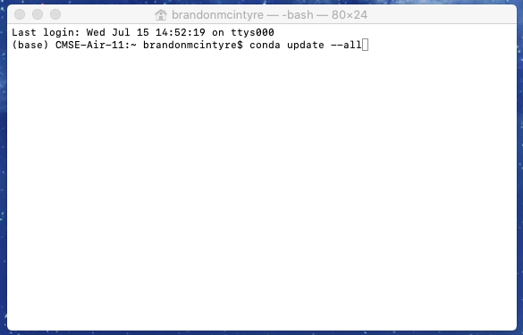 Using Spotlight by pressing command + space-bar or simply use the search bar in the top right corner search terminal and press Enter. Then type in the command conda update --all and press Enter. This command will update anaconda.
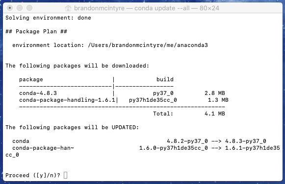 To continue type y and press enter.
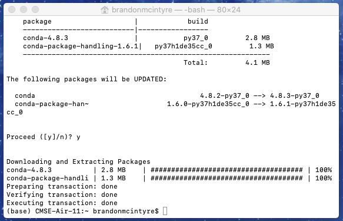 If all goes well you should be all updated.
Checking that Python is available in your command line path
Make sure Anaconda is already installed on your system.
Open up any terminal besides anaconda prompt and run Jupyter Notebook.
 On keyboard press Windows-key + r or simply use the search bar on the taskbar if it is visible. Enter
On keyboard press Windows-key + r or simply use the search bar on the taskbar if it is visible. Enter cmd and press enter. This will open up the Windows Command terminal.
 Type in
Type in jupyter notebook and press Enter. This should launch a jupyter notebook tab on a web browser.

 To exit jupyter notebook close the tab on the web browser, and go to the terminal window and type Ctrl + c twice in a row.
To exit jupyter notebook close the tab on the web browser, and go to the terminal window and type Ctrl + c twice in a row.
Make sure Anaconda is already installed on your system.
Open up the terminal and run Jupyter Notebook.
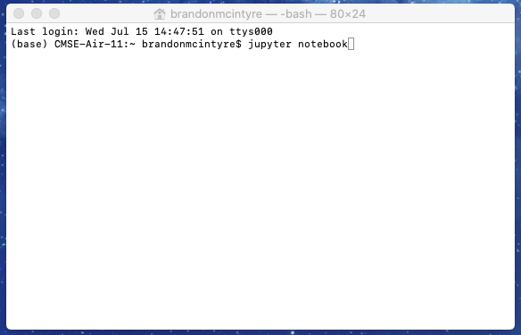 Using Spotlight by pressing command + space-bar or simply use the search bar in the top right corner search terminal and press Enter. Then type in jupyter notebook and press Enter.
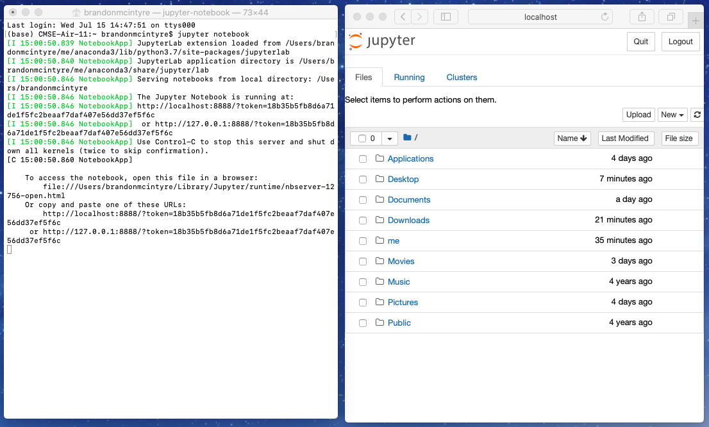 This should launch a jupyter notebook tab on a web browser and the terminal should look like this.
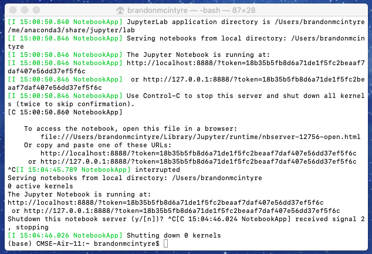 To exit jupyter notebook close the tab on the web browser, and go to the terminal window and type control + c twice in a row.
If you don’t having a fully functioning up-to-date installation of Anaconda Python
If you have a Windows computer, jump to this section and follow the instructions.
If you have a Mac, jump to this section and follow the instructions.
If you have a Linux computer and aren’t sure how to go about installing Anaconda, contact you instructor.
Installing Anaconda for Windows
Instructions for downloading and installing Anaconda (Python 3.8.x):
Go to the Anaconda Download webpage:
Use the download button under the Your data science toolkit (or just scroll until you see Anaconda Installers)

Download the Python 3.8 version, you’ll notice there is a 32-bit and 64-bit version. If you are unsure which you should download, you’ll most likely want the 64-bit version, but if you want to be sure, follow the instructions below.
a. On keyboard press Windows-key or simply use the search bar on the taskbar if it is visible.
b. Search System Information and click on the search result.

c. Look for the line called System Type

After downloading, run the Anaconda Installer Executable. Say yes to any warnings.


 Any option here is ok, change to
Any option here is ok, change to All Users if you want to install to all accounts on your PC.
 Change the Destination folder at your own risk If troubles creep up later in class with using Anaconda, this might make the issues harder to fix. If you do change location, make sure it remains on the drive your windows installation is on.
Change the Destination folder at your own risk If troubles creep up later in class with using Anaconda, this might make the issues harder to fix. If you do change location, make sure it remains on the drive your windows installation is on.
 Make sure to enable this option This is required for software this class uses.
Make sure to enable this option This is required for software this class uses.
 Installation may take awhile, it may stay at this screen for awhile. Be patient.
Installation may take awhile, it may stay at this screen for awhile. Be patient.


 Any option here is okay, if you wanna get a feel for the things Anaconda can do, feel free to keep those checkboxes selected.
Any option here is okay, if you wanna get a feel for the things Anaconda can do, feel free to keep those checkboxes selected.
Open the command line program on your computer.
a. On keyboard press Windows-key + r or simply use the search bar on the taskbar if it is visible.
b. Enter cmd and press enter.
Type jupyter notebook in the command line and hit enter.
If everything goes correctly, a browser window should open up with the Jupyter interface running. If things don’t work, don’t worry, we will help you get started.
To exit jupyter notebook close the tab on the web browser, and go to the cmd window and type Ctrl + c twice in a row.
To close out of the terminal type exit and press enter.
If for any reason you still don’t have Anaconda functioning on your computer and you’d like to get it working, contact you instructor!
Installing Anaconda for Mac
Instructions for downloading Anaconda (Python 3.7.x):
Go to the Anaconda Download webpage:
Use the download button under the Your data science toolkit (or just scroll until you see Anaconda Installers)
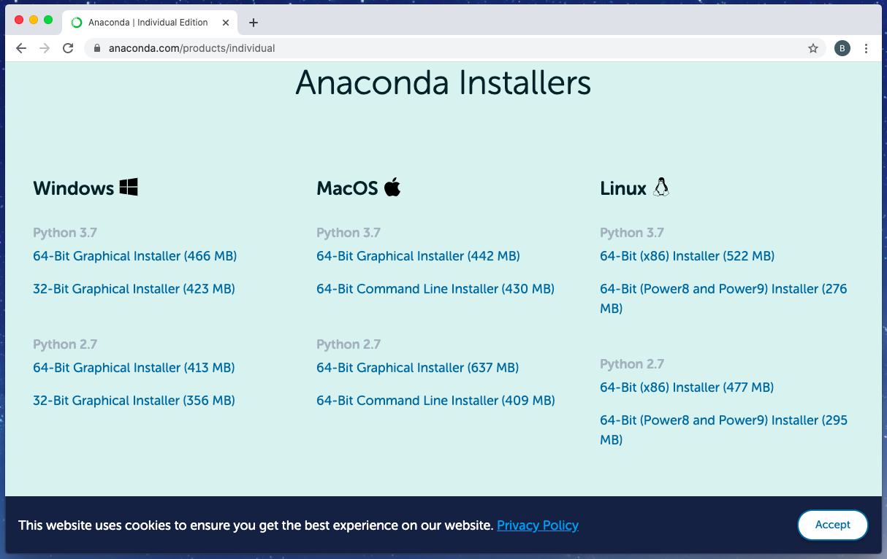
Download the Python 3.7 version, you’ll notice there is a “Graphical” and “Command Line” installer. This guide covers the Graphical, but feel free to use the Command Line if you wish.
After downloading, run the Anaconda3 installer that popped into the dock (or you can open it from the Downloads folder as well).
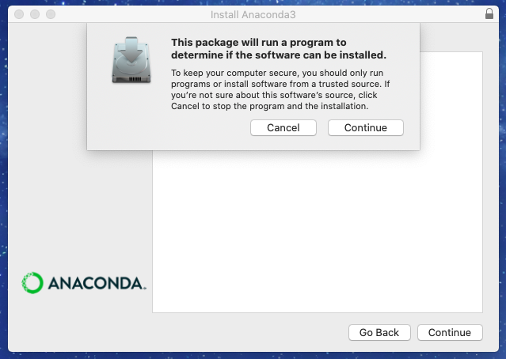 Press the Continue button
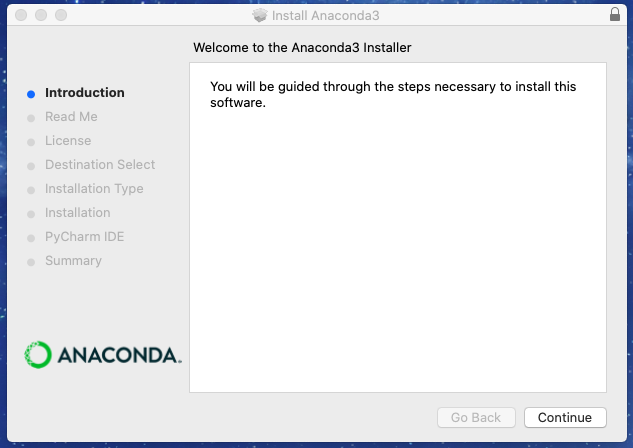 Press the Continue button.
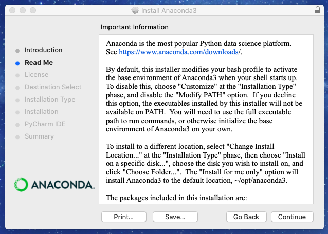 Press the Continue button.
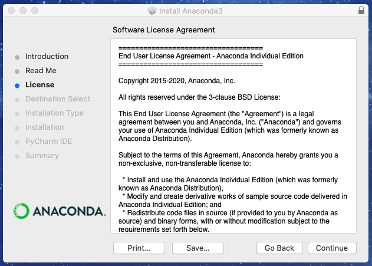 Press the Continue button.
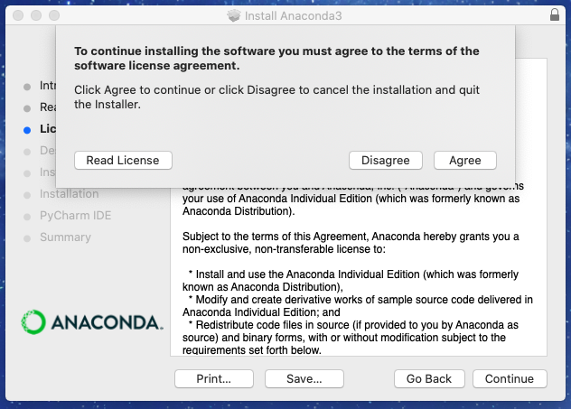 Press the Agree button.
 You may notice that there is an error if you are running macOS Catalina or higher. We will want to change the destination for both the sake of macOS Catalina users, and those that are running macOS Mojave or sooner in case if you ever do update to macOS Catalina. Click on
You may notice that there is an error if you are running macOS Catalina or higher. We will want to change the destination for both the sake of macOS Catalina users, and those that are running macOS Mojave or sooner in case if you ever do update to macOS Catalina. Click on Install on a specific disk...
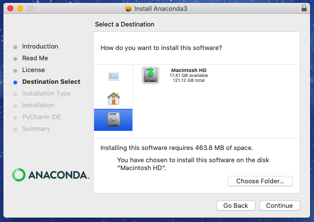 Make sure to click and select your main harddrive (You may only have one if no other storage device is connected to the compiter). Then click the Choose Folder... button.
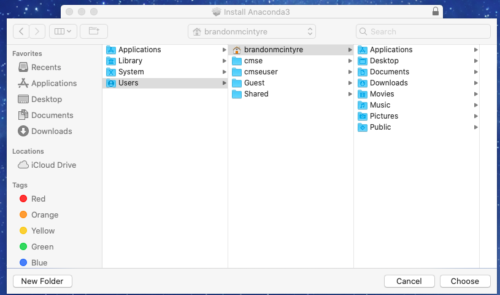 Then click on the Users -> [YOUR_USERNAME]. The [YOUR_USERNAME] should be the username of the account you are logged into. In my case this is brandonmcintyre. Then click in the bottom left hand corner on the New Folder button.
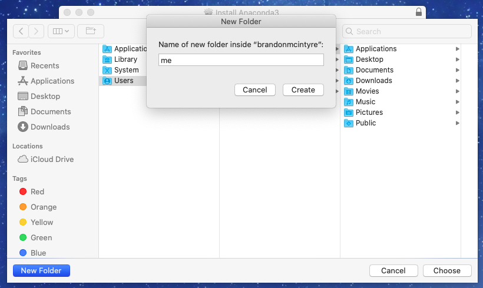 You can enter any name you want for the folder as long as it does not have a space in it. For this tutorial we will use me. Then click Create.
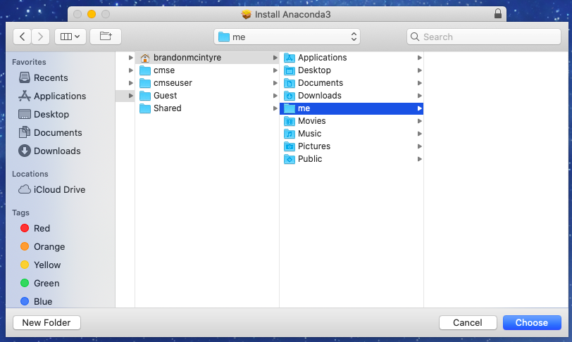 If all went well the folder should be created and should be automatically selected. Now click the Choose button.
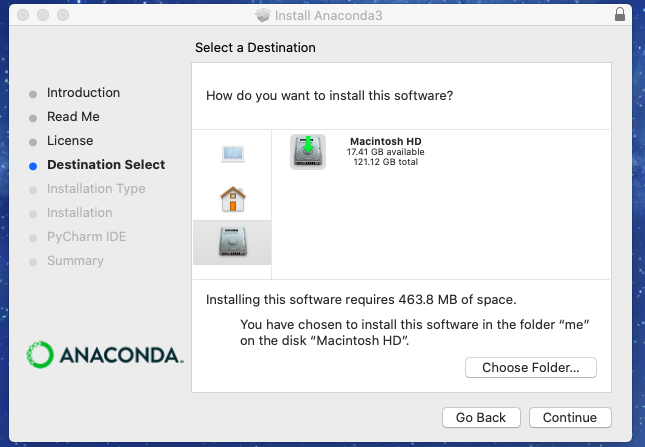 Press the Continue button.
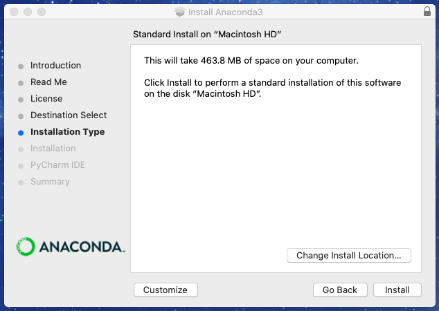 Press the Install button.
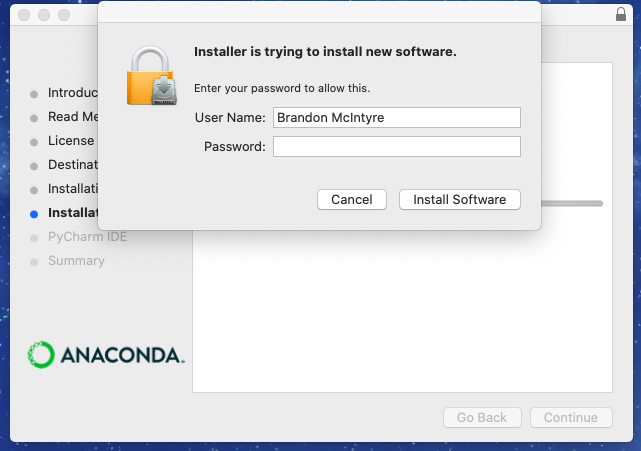 Enter your password then click Install Software.
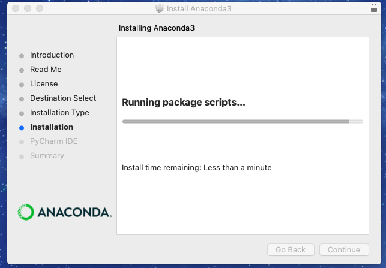 This may take a moment to install.
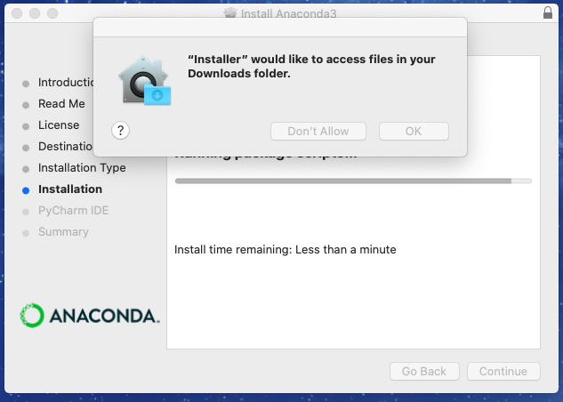 Press OK button to allow.
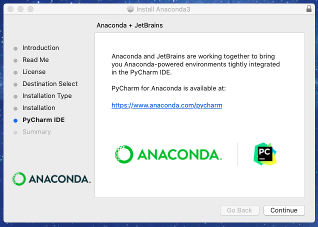 Press the Continue button.
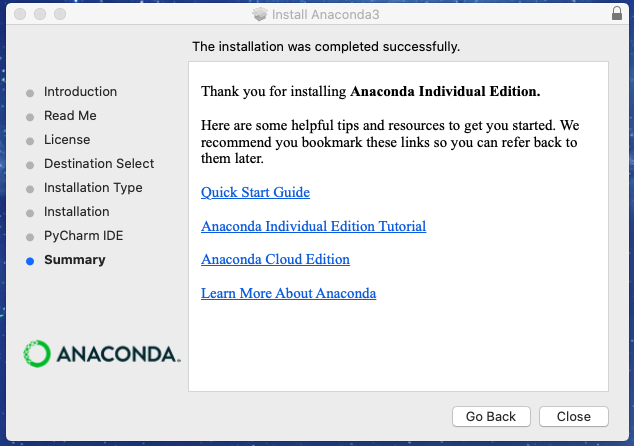 Then press the Close button. Then to finish, press Move to Trash to delete the installer.
Open terminal on your computer by using Spotlight by pressing command + space-bar or simply use the search bar in the top right corner search terminal and press Enter. Then type jupyter notebook in the command line and hit enter.
This should launch a jupyter notebook tab on a web browser and the terminal should look like this.
To exit jupyter notebook close the tab on the web browser, and go to the terminal window and type control + c twice in a row. Now you can close the terminal.
If for any reason you still don’t have Anaconda functioning on your computer and you’d like to get it working, contact you instructor!
Using Git for version control
From time to time, we’ll be using Git in this course to keep track of changes to our code. Keeping track of the revision history of code called “version control”, we’ll be discussing this in more detail in class. You’ll need to make sure that you have Git installed on your computer. Follow the steps below based on the type of computer you’re using.
When these situations arise, it will be possible to use the MSU JupyterHub interface, but if you would like to have a local installation of Git on your computer, following the directions below.
Use these directions if you have a Windows machine.
These directions if you have a Mac.
And these directions if you have a Linux machine.
Installing Git if you have a Windows computer:
If you have Windows 10 and would like to experiment with using the Windows Subystem for Linux (WSL) during this course, contact your instructor for a more detailed guide on how you can try to set everything up using that functionality. However, this is not strictly necessary and you can simply follow the directions below to set up Git within the standard Windows operating system.
- Go to the Git Download webpage, and download the Windows version.
After downloading, run the Git exectuable file. Say yes to any warnings.

 It is suggested to leave this alone, however, if you do want to change the location, make sure it is in the same drive that Anaconda is installed in.
It is suggested to leave this alone, however, if you do want to change the location, make sure it is in the same drive that Anaconda is installed in.
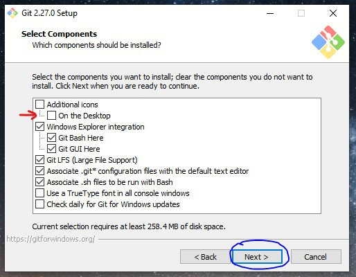 If you click this option, a shortcut linking to the terminal will be placed on your desktop. Alternatively, once the terminal is started you can pin the program to your taskbar, or search for it with Windows-key

 Any text editor can be used here, however, if you have never used a command line text editor just leave it to Vim for now. We will cover text editors later.
Any text editor can be used here, however, if you have never used a command line text editor just leave it to Vim for now. We will cover text editors later.
 Either option 2 or 3 is ok. It is recommend to use option 2, however, if you want unix-commands to be avalible in native command prompts (like MS-DOS or powershell) you can select option 3.
Either option 2 or 3 is ok. It is recommend to use option 2, however, if you want unix-commands to be avalible in native command prompts (like MS-DOS or powershell) you can select option 3.


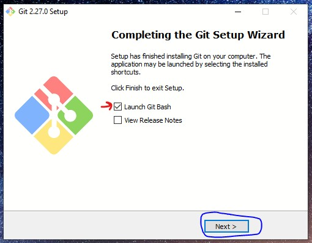 Make sure to check the box that says Launch Git Bash. This is helpful for the next step. If you accidently do not check the box, you can always press Windows-key and search for Git Bash
Adding Anaconda functionality to Git-Bash
Next we are going to add Anaconda’s python to our Git-bash terminal. This is crucial as this is what will allow us to run python from the terminal, and install new packages into our Andacona’s python. We will first add Andaconda to our PATH, and then “create an alias” to run python from Git-bash.
Find your Anaconda prompt (If needed, see above for screenshots). To do this, on the keyboard press Windows-key or simply use the search bar on the taskbar if it is visible. Search Anaconda Prompt and click on the search result.
Type where python and press enter.
 Notice that there may be two locations. We are looking for the location that has
Notice that there may be two locations. We are looking for the location that has anaconda3 in the location. Keep this window open while we switch over to using the Git Bash terminal.
Using Git Bash (which should be open from our last step), navigate to what is known as your home directory by typing cd ~ in the terminal. (Notice how the symbols changed from / known as the “root” directory to ~ which is our “home” directory) (It is also possible you may load into your home directory automatically as well)

Using a text editor, the .bashrc file will need to modified to include the path to Anconda’s python using the alias feature. It is most likely that you will not already have the .bashrc so the file will need to be created. (For reference the .bashrc file is a file that contains settings that is ran everytime the terminal is started)
 Type
Type vi .bashrc into the Git Bash terminal. This will open up/create the .bashrc with a command line text editor called Vim.
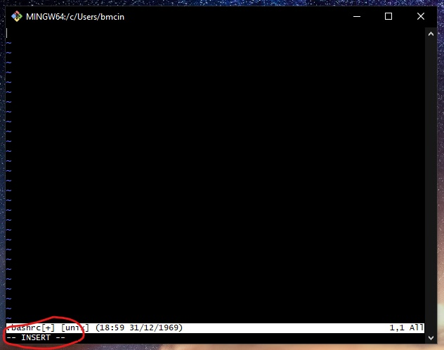 Press (lowercase)i. You will notice that this bottom left corner will go from blank to saying -- INSERT --. This changed the mode from “Command Mode” to “Insert Mode”. Command Mode is where you can run commands such as save, exit, and the like. Insert mode is where you can type into the file and edit its contents.
 Now we will use the location found when using
Now we will use the location found when using where python in Anaconda Prompt (there may be two locations, use the one with Anconda3 in the location path) to create an alias for running python from the terminal. The general format is alias python='winpty [PATH FROM "WHERE PYTHON"]'.
To make this a little easier would be to copy and paste from the Anconda Prompt. First we need to type alias python='winpty into the Git Bash terminal.
Then, to copy the “Anaconda3” python path from Anaconda Prompt, use your mouse to left-click and drag over the text in Anaconda Prompt to highlight it, and then right-click on the highlighted text. This should make the highlighting of the text disappear. This now means you have copied the text you just highlighted.
Go over to the Git Bash terminal and right-click into the terminal. Now there should be an option to Paste, click that. Then make sure to type ' at the end of what you just copied.
Next we are going to need to edit the location path from windows notation, to unix-like notation. To do this use the arrow-keys to move along the text, and change all back-slashes \ to / forward-slashes. Then change C: to lowercase /c. Then you should have the correct alias.
(If you cannot get this method to work, simply type out the above alias by hand)
 To save and close the file we will need to return back to the “Command Mode” to do this press the
To save and close the file we will need to return back to the “Command Mode” to do this press the Esc on your keyboard. You will notice the bottom left-hand corner will go from -- INSERT -- to blank. Then type on your keyboard :wq and press enter. This is the command to save (or write to the disk w) and to quit the text editor (q).
 Then to check and make sure you entered the alias write, run the the command
Then to check and make sure you entered the alias write, run the the command cat .bashrc. The cat command “prints” to your terminal all of the file contents. In our case this is contents of our .bashrc file. Keep Git Bash open for later steps.
The PATH varibles in windows may need to altered to include the PATH to our Anaconda Installation. This will make sure to link Anaconda commands with the Git Bash terminal.
 On keyboard press Windows-key or simply use the search bar on the taskbar if it is visible. Type in
On keyboard press Windows-key or simply use the search bar on the taskbar if it is visible. Type in Edit environment varibles for your account. Click on the search result.
 Under the first section “User variables for [YOUR USERNAME]” double click on the line that has
Under the first section “User variables for [YOUR USERNAME]” double click on the line that has Path under the Varaible column.
 Here we can check and see all of the PATH variables for our terminal. You may notice Paths to Anaconda3 already entered in (except instead of my username “bmcin” you will have your own username). If you have all of the Anaconda3 paths in this picture (minus the one that starts with
Here we can check and see all of the PATH variables for our terminal. You may notice Paths to Anaconda3 already entered in (except instead of my username “bmcin” you will have your own username). If you have all of the Anaconda3 paths in this picture (minus the one that starts with %USERPROFILE%) you are fine and can close out of these windows and skip to step 6. If you do not have any/only partial of the Anaconda3 paths (Again, minus the one that starts with %USERPROFILE%) then you will need to add these paths. The paths may vary by system if you saved Anaconda3 not in the default spot the Anaconda Installer suggested. Fortunately, we can use the path from the where python command we ran on the anaconda prompt in step 2 to get the paths we need.
 You will notice that the path from
You will notice that the path from where python returns a path that has “Anaconda3” in the path. C:\Users\bmcin\anaconda3\python.exe. What you will want to do is copy everything up to “anaconda3” (C:\Users\bmcin\anaconda3). Then press the New button and then paste the path in there. Then add on whatever else is necessary to complete the path. You will need each of the following paths.Note: [ANACONDA PATH] is the path you copied.
[ANACONDA PATH][ANACONDA PATH]\Scripts[ANACONDA PATH]\Library\bin[ANACONDA PATH]\Library\usr\bin[ANACONDA PATH]\Library\mingw-w64\bin
Once finished adding the paths, press OK on the first window to close it, and press OK again to close the second window.
To finish this out we will need to “run” the .bashrc file to apply our changes, and then check to make sure we are all set.
 In the Git Bash terminal, type and enter
In the Git Bash terminal, type and enter source .bashrc. This will apply the changes we made earlier to the file. If you encounter an error in this part or the next part, it is most likely you did not close your ' in your alias, you did not put a / in front of the c, or you spelled something wrong. Follow step 4 again.
 To test if everything was successful, in Git Bash type
To test if everything was successful, in Git Bash type python and press enter, if all is well the terminal should appear as it does above. Currently you will be running the “python interpreter” which is a program that runs in your terminal.
If successful, and the terminal looks like it does above use the key combination Ctrl + d to quit out of the python interpreter. Then type in exit and hit enter, this will close the terminal.
If unsucessful, and nothing appears or there is an error you can simply just simply close the terminal with the X in the top right corner.
Changing startup location to Home directory
This next step is to ensure that when Git Bash starts up, you will load into the home directory (~) instead of the root directory (/). This will make it less likely for the file and folders in the root directory to be harmed, and proper file storage etiquette be followed.
Close down the Git Bash terminal if open, and restart. You may notice a Warning in the terminal saying .bash_profile and other files are missing, you can saftely ignore this.
Navigate to the home directory and open .bash_profile in a text editor.
 In the terminal type
In the terminal type cd ~ and press Enter to change your directory to the Home directory. Then type vi .bash_profile and press Enter. This will open the .bash_profile file that is used to run the .bashrc file that we edited earlier.
Add a line that changes the directory to home
 Press (lowercase)
Press (lowercase)i on the keyboard. Then, using the down-arrow key ↓ on your keyboard move to the last possible line you can. You will notice the screen will flash if you are try pressing the down-arrow while on the last line. Then, using the right-arrow key → on your keyboard move to the end of the line. Again, you will notice the screen will flash if you are try pressing the right-arrow while at the end of the line. Then, on the keyboard press Enter and this should make a newline. Type cd ~. If done successfully, the file should look like this. Note: if any of the lines above the cd ~ were altered, this could break things. Make sure you did not alter any of those lines before continuing. If you did happen to mess them up, press Esc on the keyboard and then type :q! and press Enter this will not save any of the changes you made, and you can try editing it again.
 To save and close the file we will need to return back to the “Command Mode” to do this press the
To save and close the file we will need to return back to the “Command Mode” to do this press the Esc on your keyboard. You will notice the bottom left-hand corner will go from -- INSERT -- to blank. Then type on your keyboard :wq and press Enter. This is the command to save (or write to the disk w) and to quit the text editor (q).
Test to make sure you start up in the home directory.
 First close down the Terminal. Then open it back up. If all went well you should start up in the Home directory. You can tell by looking here. If it has
First close down the Terminal. Then open it back up. If all went well you should start up in the Home directory. You can tell by looking here. If it has ~ then we are all-set.
Congrats you are done with setting up a terminal!
If at anypoint anything got too confusing or you were not successful, please let your instructor know during class or through email and they can work with you to resolve any issues.
Install Git if you have a Mac computer:
As a Mac user, you may already have Git install on your computer since Mac You may already have Git installed on your computer.
You can check if this is the case by opening the “Terminal” application (search for it in Spotlight if you don’t know where it is by pressing command + space-bar or use the search bar in the top right corner search terminal and press Enter) and then type git --version and hit enter. Like so:
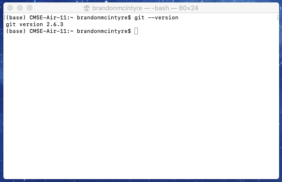
If you already have Git installed, it should tell you what version you have. If Git isn’t installed, it will either tell you that it can’t find Git, or it will ask if you want to install the “Command Line Tools” to install Git. You’re welcome to use the version on you machine, or the version that Command Line Tools installs, but if you want the newest version of Git you’ll have to install it yourself. Read on if you want to embark on this journey!
Download and install the newest version of Git for Mac
First, you’ll want to onstall Homebrew. Visit the Homebrew main page for instructions on how to install Homebrew
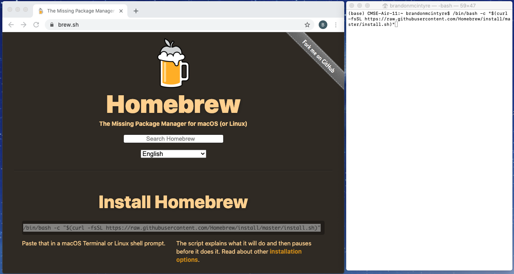 Copy and paste the terminal command into the terminal and press Enter.
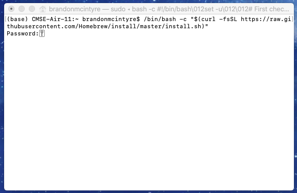 Enter the password to your account and press Enter.
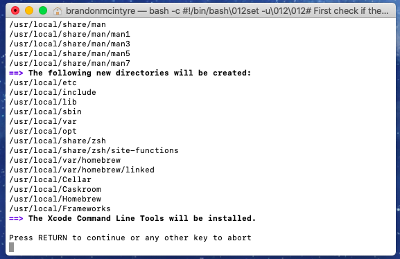 To continue press the Enter button. This will take a moment to install everything necessary.
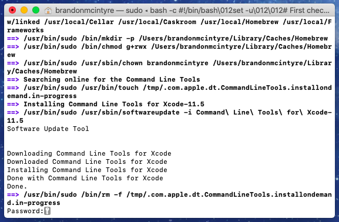 To continue enter your password. Press the Enter button.
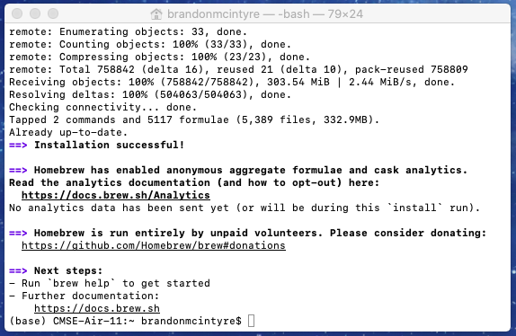 If sucessful you will now be done.
In the terminal install git via homebrew.
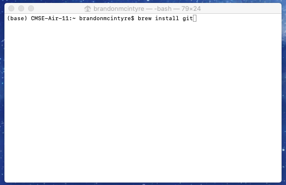 Type in the terminal brew install git. Then press Enter.
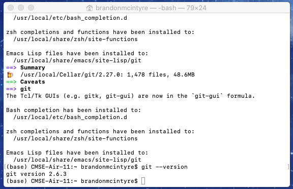 If successful, there should be no errors, to test type git --version and press Enter. You should then see a version.
Install Git if you have a Linux computer:
In the “Console” application, use the appropriate command from this page: https://git-scm.com/download/linux
Once you finish the installation process, you should be able to open the Console and run git --version to see if Git has been successfully installed.
Installing the Atom text editor
In this course you may be expected to work outside of Jupyter notebooks to write Python scripts from time to time, which you’ll run from the Command Line Interface. In order to write these scripts, you’ll need to be comfortable using a text editor. If you don’t already have a good text editor that you prefer using you can use one of the system defaults, but if you’d like to try another options, Atom can be a good choice. To install Atom, go to https://atom.io/ and download the version appropriate for your computer.
You may wish to read through the installation information specific to your operating system:
Windows: http://flight-manual.atom.io/getting-started/sections/installing-atom/#platform-windows
Mac: http://flight-manual.atom.io/getting-started/sections/installing-atom/#platform-mac
Linux: http://flight-manual.atom.io/getting-started/sections/installing-atom/#platform-linux
That’s it! We look forward to seeing you in class!